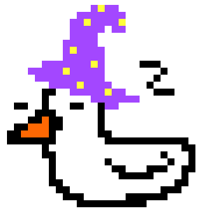

Main Features
As students, we can recognise that procrastination has a tendency to mess with our goals. To combat this, we have collectively produced an application that aims to support your battle against procrastination. The aim of this app is to help students be more productive when it comes to academic work (though this app can be used by all audiences). We aim to achieve this by creating an application that allows the user to earn in-game currency to look after a virtual pet. When using our app, you can expect the following features:
- Easy to use GUI.
- Create, edit and delete a to-do list.
- Create multiple to-do lists.
- An in-game currency system based on task completion.
- In-game currency can be used to make in-game purchases for your pet.
- The pets stats will be decreased on a daily basis.
- Receive daily reminder notifications to check-in on your pet and tasks
